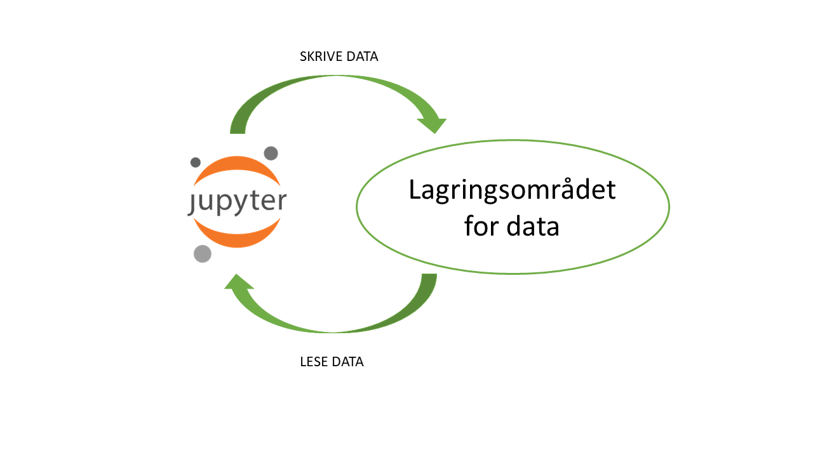

Jobbe med data
Når vi oppretter et dapla-team så får vi tildelt et eget området for lagring av data. For å kunne lese og skrive data fra Jupyter til disse områdene må vi autentisere oss, siden Jupyter og lagringsområdet er to separate sikkerhetsoner.
Figur 1 viser dette klarer skillet mellom hvor vi koder og hvor dataene ligger på Dapla1. I dette kapitlet beskriver vi nærmere hvordan du kan jobbe med dataene dine på Dapla.

SSB-biblioteker
For å gjøre det enklere å jobbe data på tvers av Jupyter og lagringsområdet er det laget noen egne SSB-utviklede biblioteker for å gjøre vanlige operasjoner mot lagringsområdet. Siden både R og Python skal brukes på Dapla, så er det laget to biblioteker, en for hver av disse språkene. fellesr er biblioteket for R, og dapla-toolbelt er biblioteket for Python.
dapla-toolbelt
dapla-toolbelt er en en pakke som lar deg enkelt lese og skrive til lagringsområdet uten å måtte autentifisere deg manuelt. Den har en Pandas-aktig syntaks som forhåpentlig er gjenkjennbar for de fleste. Pakken er installert i alle Python-kernels på Dapla, så du trenger ikke å installere den selv hvis du åpner en notebook med Python3 for eksempel. For å importere hele biblioteket i en notebook skriver du bare
import dapla as dpdapla-toolbelt bruker en pakke som heter gcsfs for å kommunisere med lagringsområdet. gcsfs er en pakke som lar deg bruke Google Cloud Storage (GCS) som om det var en filsystem. Det betyr at du kan bruke samme syntaks som du bruker for å lese og skrive til filer på din egen maskin. Du kan lese mulighetene i gcsfs her. Et eksempel på hvordan de to pakkene kan brukes sammen ser du her:
from dapla import FileClient
fs = FileClient.get_gcs_file_system()
# Example of how you can use gcsfs and dapla-toolbelt together
fs.mkdir("gs://my-bucket/my-folder")I koden over brukte jeg kommandoen mkdir fra gcsfs og FileClient fra dapla-toolbelt for å opprette en mappe i lagringsområdet.
I kapitlene under finner du konkrete eksempler på hvordan du kan bruke dapla-toolbelt til å jobbe med data i SSBs lagringsområdet.
fellesr
R-pakken fellesr er under utvikling og gir mye av den samme funksjonaliteten som dapla-toolbelt gir for Python. I tillegg til å kunne lese og skrive til lagringsområdet på Dapla, så har fellesr også funksjoner for å jobbe med metadata på Dapla.
fellesr er foreløpig ikke tilgjengeliggjort som en pakke som kan installeres. For å bruke pakken kan du gjøre følgende:
- Kopiere scriptet DAPLA_funcs.R og legg den i en fil sammen med Notebooken din
- I en R-notebook som ligger i samme mappe som filen DAPLA_funcs.R starter du med å skrive
source("DAPLA_funcs.R")Da er alle funksjonene tilgjengelig for deg i Notebooken din.
Liste ut innhold i mappe
Det finnes et område som alle SSB-ansatte har lese- og skrivetilgang til. Det er
gs://ssb-prod-dapla-felles-data-delt/ i prod-miljøet på Dapla, og
gs://ssb-staging-dapla-felles-data-delt/ i staging-miljøet. Eksemplene under bruker førstnevnte i koden, slik at alle kan kjøre koden selv.
Kode-eksemplene finnes for både R og Python, og du kan velge hvilken du skal se ved å trykke på den arkfanen du er interessert i.
Å liste ut innhold i et gitt mappe på Dapla er ganske enkelt. Under ser du hvordan du kan liste ut innholdet i følgende mappe:
gs://ssb-prod-dapla-felles-data-delt/felles/veiledning/python/eksempler/purchases
Vi bruker modulen FileClient fra dapla-toolbelt for å liste ut innholdet i en mappe.
from dapla import FileClient
# Set path to folder
bucket = "gs://ssb-prod-dapla-felles-data-delt"
folder = "felles/veiledning/python/eksempler/purchases"
FileClient.ls(f"{bucket}/{folder}")Med kommandoen over får du listet ut alle filnavn i mappen. Hvis du vil ha mer informasjon om filene så kan du bruke ls-kommandoen med detail = True, som under:
FileClient.ls(f"{bucket}/{folder}", detail = True)Syntaksen med ls er veldig lik det man kjenner fra en Linux-terminal. Men når vi bruker detail = True blir metadata om filene returnert som en Python-liste med dictionaries. Det kan være svært nyttig når du f.eks. trenger å vite dato og tidspunkt for når en fil ble opprettet, eller når den sist ble oppdatert.
# Loading functions into notebook
source("DAPLA_funcs.R")
# Path to folder
bucket <- "ssb-prod-dapla-felles-data-delt/"
folder <- "felles/veiledning/python/eksempler/purchases"
# List files in folder
list.files(paste0(bucket, folder))Skrive ut filer
Å skrive filer til et lagringsområde på Dapla er også ganske enkelt. Det ligner mye på den syntaksen vi er kjent med fra vanlige R- og Python-pakker, med noen små unntak.
Parquet
Under lager vi en dataframe i en notebook og skriver den ut til en parquet-fil. Stien vi skriver til er
gs://ssb-prod-dapla-felles-data-delt/felles/veiledning/python/eksempler/purchases:
Når vi leser en Parquet-fil med dapla-toolbelt så bruker den pyarrow i bakgrunnen. Dette er en av de raskeste måtene å lese og skrive Parquet-filer på.
import dapla as dp
import pandas as pd
import numpy as np
# Set path to folder
bucket = "gs://ssb-prod-dapla-felles-data-delt"
folder = "felles/veiledning/python/eksempler/purchases"
# Create pandas dataframe
purchases = pd.DataFrame(np.random.randn(10, 5),
columns=["A", "B", "C", "D", "E"])
# Write pandas dataframe as parquet to GCS bucket
dp.write_pandas(df = purchases,
gcs_path = f"{bucket}/{folder}/data.parquet",
file_format = "parquet",)Når vi kalte write_pandas over så spesifiserte vi at filformatet skulle være parquet. Dette er default, så vi kunne også ha skrevet det slik:
dp.write_pandas(df = purchases,
gcs_path = f"{bucket}/{folder}/data.parquet")Men for de andre filformatene må vi altså spesifisere dette.
Kommer snart
Tekstfiler
Kommer snart eksempler på hvordan man kan skrive ut tekstfiler som CSV, JSON og XML.
dapla-toolbelt kan skrive ut json, csv og posisjonsfiler (fixed-width-files/fwf) til lagringsområdet. Måten den gjør det på er å bruke Pandas sine funksjoner read_json, read_csv, read_fwf under panseret. Dette kan være nyttig å vite for skjønne hvordan dapla-toolbelt håndterer ulike strukturer i (spesielt hierarkiske) tekstfiler. Under ser du hvordan du kan skrive ut en dataframe til en json-fil.
import numpy as np
import pandas as pd
from dapla import FileClient
# Set path to folder
bucket = "gs://ssb-prod-dapla-felles-data-delt"
folder = "felles/veiledning/python/eksempler/purchases"
# Create a dataframe with Pandas
df = pd.DataFrame(np.random.randn(10, 5), columns=["A", "B", "C", "D", "E"])
# Save dataframe as json with dapla-toolbelt
dp.write_pandas(df = df,
gcs_path = f"{bucket}/{folder}/test.json",
file_format = "json")Som vi ser at syntaksen over så kunne vi skrevet ut til noe annet enn json ved å endre verdien i argumentet file_format.
Kommer snart.
xlsx
Det er ikke anbefalt å bruke xlsx-formatet, men her ser du hvordan det kan skrives ut. Mer kommer.
import pandas as pd
from dapla import AuthClient
# Henter token for å kunne lese fra Dapla
token = AuthClient.fetch_google_credentials()
# Filsti
bucket = "gs://ssb-prod-dapla-felles-data-delt"
folder = "felles/veiledning/python/eksempler/purchases"
df.to_excel(f"{bucket}/{folder}/test.xlsx",
storage_options={"token": token})Kommer snart
Lese inn filer
Å lese inn filer på med dapla-toolbelt er nesten like rett frem som med Pandas. Under finner du eksempler på hvordan du kan lese inn data til en Jupyter Notebooks på Dapla.
Parquet
import dapla as dp
# Set path to folder
bucket = "gs://ssb-prod-dapla-felles-data-delt"
folder = "felles/veiledning/python/eksempler/purchases"
# Read path into pandas dataframe
dp.read_pandas(gcs_path= f"{bucket}/{folder}/data.parquet",
file_format = "parquet",
columns = None,)Som vi så med write_pandas så er file_format default satt til parquet, og default for columns = None, så vi kunne også ha skrevet det slik:
dp.read_pandas(gcs_path= f"{bucket}/{folder}/data.parquet")columns-argumentet er en liste med kolonnenavn som vi ønsker å lese inn. Hvis vi ikke spesifiserer noen kolonner så vil alle kolonnene leses inn.
Kommer snart
Tekstfiler
Kommer mer snart. Python-koden under bygger på eksempelet over.
import dapla as dp
# Path to write to
bucket = "gs://ssb-prod-dapla-felles-data-delt"
folder = "felles/veiledning/python/eksempler/purchases"
# Read in json-file from dapla-storage
df = dp.read_pandas(gcs_path = f"{bucket}/{folder}/test3.json",
file_format = "json")Kommer snart
xlsx
import pandas as pd
from dapla import AuthClient
# Hent token
token = AuthClient.fetch_google_credentials()
# Les inn fil
df = pd.read_excel("gs://ssb-prod-arbmark-skjema-data-produkt/test_gcp.xlsx",
storage_options={"token": token})Kommer snart
Slette filer
Å slette filer fra lagringsområdet kan gjøres på flere måter. I kapitlet om sletting av data viste vi hvordan man gjør det med pek-og-klikk i Google Cloud Console. Under ser du hvordan du kan slette filer med dapla-toolbelt og gcsfs.
from dapla import FileClient
fs = FileClient.get_gcs_file_system()
bucket = "gs://ssb-prod-dapla-felles-data-delt"
folder = "felles/veiledning/python/eksempler/purchases"
fs.rm(f"{bucket}/{from_folder}/df.json")Kommer snart
Kopiere filer
Å kopiere filer mellom mapper på et Linux-filsystem innebærer som regel bruke cp-kommandoen. På Dapla er det ikke så mye forskjell. Vi bruker en ligende tilnærming nå vi skal kopiere mellom bøtter eller mapper på lagringsområdet til SSB. Under ser du hvordan du kan kopiere en fil fra en mappe til en annen.
La oss begynne med et eksempel der vi kopierer en fil fra en mappe til en annen i samme bøtte.
from dapla import FileClient
fs = FileClient.get_gcs_file_system()
# Path to folders
bucket = "gs://ssb-prod-dapla-felles-data-delt"
from_folder = "felles/veiledning/python/eksempler/purchases"
to_folder = "felles/veiledning/python/eksempler"
# Copy file
fs.cp(f"{bucket}/{from_folder}/data.parquet",
f"{bucket}/{to_folder}/data_copy.parquet")Det også fungere for å kopiere filer mellom bøtter.
Et annet scenario vi ofte vil støte på er at vi ønsker å kopiere en fil fra vår Jupyter-filsystem til en mappe på lagringsområdet. Her kan vi bruke fs.put-metoden.
from dapla import FileClient
fs = FileClient.get_gcs_file_system()
# Create a new file in your home directory called test.txt
with open('/home/jovyan/test.txt', 'w') as f:
f.write('Create a new text file!')
#Path to folder
bucket = "gs://ssb-prod-dapla-felles-data-delt"
folder = "felles/veiledning/python/eksempler"
# Copy file from local to remote file system
fs.put(lpath=f"/home/jovyan/test.txt", rpath=f"{bucket}/{folder}/test.txt")Ønsker vi å kopiere en hel mappe fra lagringsområdet til Jupyter-filsystemet, kan vi bruke fs.get-metoden, med opsjonen recursive=True.
from dapla import FileClient
fs = FileClient.get_gcs_file_system()
# Copy file
fs.get(<from_bucket>,
"/home/jovyan/sesongjustering/",
recursive=True)Kommer snart
Flytte filer
from dapla import FileClient
fs = FileClient.get_gcs_file_system()
bucket = "gs://ssb-prod-dapla-felles-data-delt"
from_folder = "felles/veiledning/python/eksempler/purchases"
to_folder = "felles/veiledning/python/eksempler"
fs.mv(f"{bucket}/{from_folder}/data.parquet", f"{bucket}/{to_folder}/data.parquet")Kommer snart
Opprette mapper
from dapla import FileClient
fs = FileClient.get_gcs_file_system()
#Path to folder
bucket = "gs://ssb-prod-dapla-felles-data-delt"
folder = "felles/veiledning/python/eksempler"
# Create folder
fs.mkdir(f"{bucket}/{folder}/testmappe/")Kommer snart
Fotnoter
I de tidligere systemene på bakken så var det ikke nødvendig med autentisering mellom kodemiljø og datalagringen↩︎